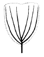

종자기사 (2004-08-08 기출문제)
1과목: 종자생산학
1. 검사용 종자 시료추출의 방법으로 적당하지 않은 것은?
- 균분기이용
- 무작위컵방법
- 균분격자방법
- 표본방법
(정답률: 알수없음)

2. 청과재배의 주산지에서 채종이 많이 이루어지고 있는 작물은?
- 무
- 고추
- 상추
- 양파
(정답률: 알수없음)
3. 발아 검사에 대한 일반적인 규정과 방법으로 잘못 설명된 것은?
- 발아검사기간은 작물에 따라 다르며 종자발아 검사규정에 따른다.
- 발아율은 백분율로 나타내고, 소수점 이하는 반올림 하여 정수로 나타낸다.
- 발아율의 반복간 차이가 허용 범위를 벗어날 경우 재검사를 실시해야 한다.
- 반복간 발아율 차이의 허용 범위는 정해진 규정에 따라야 하며 재검사는 1차에 한정한다.
(정답률: 알수없음)
4. 종자의 안전저장시 고려해야 할 요인과 거리가 먼 것은?
- 저온
- 건조
- 밀폐
- 충분한 산소
(정답률: 알수없음)
5. 상추에서 1대 잡종 채종이 실용화되고 있지 않는 이유는?
- 품질이 낮기 때문이다.
- 종자의 시장규모가 작다.
- 엽채류이므로 1대 잡종 이용의 필요성이 없다.
- 화기 구조상 자가수분이 잘 이루어지므로 교배가 어렵다.
(정답률: 알수없음)
6. 자가불화합성의 유전양식이 배우체형인 경우에 임실종자 비율이 100 % 가 되는 조합은?
- S1S3×S1S4
- S1S3×S2S3
- S1S3×S2S4
- S1S3×S1S3
(정답률: 알수없음)
7. 수분 매개 곤충으로써 '꿀벌'과 '꽃등에'의 차이점이다. 옳은 것은?
- 벌이 꽃등에보다 낮은 온도에서 활동한다.
- 벌이 좁은 공간에서도 활동을 더 잘 한다.
- 꽃등에는 귀소성이 없다.
- 꽃등에는 지속적으로 활동한다.
(정답률: 알수없음)
8. 단자엽식물의 종자발아에서 종자가 침윤되면 가장 먼저 활동하는 효소는?
- gibberellin
- α - amylase
- lipase
- phytase
(정답률: 알수없음)
9. 종자의 휴면타파 방법에 속하지 않는 것은?
- 예냉
- 예열
- GA3
- TP
(정답률: 알수없음)
10. 종자의 발달에 관한 설명 중 잘못된 것은?
- 수정 후 세포분열과 신장을 위한 양분과 수분의 흡수로 종자는 무거워진다.
- 수정 직후의 건물중은 과피가 가장 무겁다.
- 배젖(배유) 발달의 초기에 높은 수준에 있던 당함량은 전분 함량이 증가함에 따라 급속히 감소한다.
- DNA와 RNA는 배젖(배유)의 초기발생과정 중 세포가 분열할 때에는 감소한다.
(정답률: 알수없음)
11. 종자 전염병 방제를 위한 종자 처리 방법 중 물리적 방법이 아닌 것은?
- 냉수침법
- 온탕침법
- 자외선, 적외선 조사법
- 도말법
(정답률: 알수없음)
12. 발아검사를 할 때 발아지의 조건이 아닌 것은?
- 흡습성이 충분해야 한다.
- 젖은 상태에서 잘 찢어지지 않아야 한다.
- 유독물질이 없어야 한다.
- 뿌리가 뚫고 들어가기 쉬워야 한다.
(정답률: 알수없음)
13. 다음 중 수분 되기 전의 화분이 1개의 정핵과 1개의 영양핵을 가진 2핵성 화분 식물은?
- 콩과 식물
- 가지과 식물
- 벼과 식물
- 배추과 식물
(정답률: 알수없음)
14. 미숙기에 수확한 종자의 발아능 획득에 후숙의 효과가 가장 큰 작물은?
- 과채류
- 근채류
- 엽채류
- 곡실류
(정답률: 알수없음)
15. 종자 코팅의 목적과 거리가 먼 것은?
- 종자의 휴면타파를 위함이다.
- 기계 파종시 취급이 유리하다.
- 종자소독이 가능하다.
- 종자의 품위를 향상시킬 수 있다.
(정답률: 알수없음)
16. 자가불화합성(自家不和合性)식물에서 모본(母本)을 유지하는 방법은?
- 뇌수분
- 자가수분
- 방임수분
- 개화수분
(정답률: 알수없음)
17. 종자의 자발휴면에 해당하는 것은?
- 종피가 딱딱하여 배의 팽대가 기계적으로 억제되는 경우
- 종피에 발아억제물질을 가지고 있어 발아가 억제되는 경우
- 종자의 흡수 부위에 큐티클층이 잘 발달하여 수분 투과를 억제하는 경우
- 종피의 불투기성으로 인하여 산소 흡수가 저해되고, 이산화탄소가 축적되는 경우
(정답률: 알수없음)
18. 식물의 불화합성을 타파하기 위한 방법으로 적합하지 않은 것은?
- 형매교배(sib-crossing)
- 위임성(僞稔性)의 이용
- 식물생장조절물질의 이용
- 살정제(殺精劑)의 이용
(정답률: 알수없음)
19. 옥수수에서 배유의 유전자 조성에 따른 발아율이 높은 순서로 배열된 것은?
- SuSuSu → SuSusu → Sususu → sususu
- Sususu → SuSusu → SuSuSu → sususu
- sususu → Sususu → SuSusu → SuSuSu
- SuSusu → Sususu → SuSuSu → sususu
(정답률: 46%)
20. 채종포에서 품종 순도검사를 위한 포장검사는 주로 어느 시기에 실시하는가?
- 파종기
- 개화기
- 수확기
- 성숙기
(정답률: 알수없음)
2과목: 식물육종학
21. 자가수정작물 품종간 단교잡 후대에서 개체선발을 시작할 수 있는 세대는?
- F1
- 양친 세대
- F4
- F2
(정답률: 알수없음)
22. 잡종강세 현상의 별현에 관하여 적합치 않게 표현된 것은?
- 줄기 및 잎의 생육이 왕성해 진다.
- 개화와 성숙이 촉진될 수 있다.
- 외계 불량조건에 대한 저항성이 증대된다.
- F2에서 그 효과가 가장 강하게 나타나며 일반적으로 F3까지는 그 효과가 지속된다.
(정답률: 알수없음)
23. 작물체에 방사선을 조사할 때 발생하기 쉬운 형태적 변화를 설명한 것 중 옳지 않은 것은?
- 잎이 작아지거나 두터워진다.
- 생장이 빨라진다.
- 분열조직이 사멸된다.
- 줄기에 종창이 생긴다.
(정답률: 알수없음)
24. 양적유전에 대한 설명으로 옳은 것은?
- 모든 양적 형질은 유전력이 높다.
- 관련되는 유전자의 수가 많다.
- 폴리진계를 이루지 않아 유전현상이 간단하다.
- 환경변이가 적다.
(정답률: 알수없음)
25. 다음 중 트리티케일(Triticale)의 기원은?
- 밀 x 호밀
- 밀 x 보리
- 호밀 x 보리
- 보리 x 귀리
(정답률: 알수없음)
26. 식물병에 대한 저항성에는 진성저항성과 포장저항성이 있다. 이 두가지 저항성의 차이를 옳게 설명한 것은?
- 진성저항성이나 포장저항성은 병감염율이 상대적으로 낮으나 병균을 접종하면 모두 병이 많이 발생한다.
- 진성저항성을 수평저항성이라고 하며, 포장저항성은 수직저항성이라고도 한다.
- 진성저항성이나 포장전항성 모두 병 발생이 거의 없으나, 포장저항성은 포장에서 병 발생이 없다.
- 진성저항성은 병이 거의 발생하지 않으나, 포장저항성은 여러 균계에 대하여 병 발생율이 상대적으로 낮다.
(정답률: 알수없음)
27. 식물의 불임성은 한개의 꽃 속에 있는 암술과 수술의 길이가 서로 다르기 때문에 나타나기도 한다. 암술과 수술의 길이가 다른 현상을 무엇이라 하는가?
- 웅성불임
- 자웅이숙
- 순환적 불임
- 이형예
(정답률: 알수없음)
28. 다음 중에서 유전적으로 고정될 수 있는 분산은?
- 상가적 효과에 의한 분산
- 환경의 작용에 의한 분산
- 우성효과에 의한 분산
- 비대립유전자 상호작용에 의한 분산
(정답률: 알수없음)
29. 유전적 취약성(genetic vulnerability)이란 무엇인가?
- 품종의 단순화에 의해 작물재배가 환경 스트레스에 견디지 못하는 성질
- 품종개량에 있어서 종내의 유전적 변이의 폭이 좁아서 육종에 기여하지 못하는 성질
- 식물기원지에서 떨어진 곳에서는 다양한 유전적 변이를 기대할 수 없는 현상
- 유전형질이 충분히 표현될 수 있는 환경조성이 이루어지지 않았을 때 일어나는 현상
(정답률: 알수없음)
30. 후대 검정과 관계가 적은 것은?
- 선발된 우량형이 유전적인 변이인가를 알아본다.
- 표현형에 의하여 감별된 우량형을 검정한다.
- 선발된 개체가 방황 변이인가를 알아본다.
- 질적형질의 유전적 변이 감별에 주로 이용된다.
(정답률: 알수없음)
31. 새로 육성한 우량품종의 순도를 유지하기 위하여 육종가 또는 육종기관이 유지· 관리하고 있는 종자는?
- 보급종 종자
- 원종 종자
- 원원종 종자
- 기본식물 종자
(정답률: 알수없음)
32. 중복수정에 있어서 정핵과 결합하는 배낭모세포 내의 핵은?
- 관핵과 조세포핵
- 극핵과 반족세포핵
- 난핵과 극핵
- 난핵과 반족세포핵
(정답률: 알수없음)
33. 종속간 교잡을 하면 수정이 되더라도 배가 완전 발육을 못하고 중도에서 정지되거나 또는 배유의 발육불량으로 종자가 발아하지 못한다. 이러한 경우 잡종을 얻을 수 있는 방법은?
- 배배양
- 저온처리
- 고온처리
- 오옥신처리
(정답률: 알수없음)
34. 장벽수정(hercogamy)의 대표적 식물은?
- 양파
- 복숭아
- 붓꽃
- 국화
(정답률: 알수없음)
35. 다음 marker 검정방법 중 재현성이 가장 낮은 것은?
- RAPD
- RFLP
- AFLP
- isozyme
(정답률: 알수없음)
36. 교배친(P1, P2), F1 및 F2 의 분산 값이 다음과 같을 때 넓은 의미의 유전력은 얼마인가? (분산: P1 = 28, P2 = 27, F1 = 38, F2 = 62)
- 20 %
- 50 %
- 60 %
- 15 %
(정답률: 알수없음)
37. 자식열세 현상의 설명으로 옳은 것은?
- 자가수정 작물이나 타가수정 작물 모두에서 나타난다
- 열성유전자의 동형화에 의하여 불량형질이 나타난다.
- 자식열세 현상은 세대를 거듭하여도 거의 일정한 비율로 나타난다.
- 자식열세 현상은 자식 초기에는 적지만 자식 후기에는 크다.
(정답률: 알수없음)
38. 신품종의 유전적 퇴화의 원인을 옳게 나열한 것은?
- 자연교잡, 잡종강세
- 잡종강세, 바이러스병 감염
- 바이러스병 감염, 돌연변이
- 돌연변이, 자연교잡
(정답률: 알수없음)
39. 바빌로프의 유전자 중심지설에 무우, 가지, 오이, 호박 등은 ( )가 재배기원 중심지였다고 한다. ( )안에 알맞는 것은?
- 지중해 연안지구
- 근동지구
- 중국지구
- 중앙아메리카지구
(정답률: 알수없음)
40. 20계통을 난괴법으로 4반복하여 생산성 검정 시험을 할 때 오차의 자유도는?
- 57
- 60
- 76
- 80
(정답률: 알수없음)
3과목: 재배원론
41. 정아우세를 억제하고 측아의 생장을 촉진하는 식물 호르몬은?
- 오옥신(Auxin)
- 지베렐린(Gibberellin)
- 사이토키닌(Cytokinin)
- 아브시스산(Abscisic acid)
(정답률: 알수없음)
42. 과수재배에서 기본적인 정지법 중 그림과 같이 주간을 일찍 자르고 3~4본의 주지를 발달시켜 술잔모양으로 하는 정지법은 어느 것인가?

- 개심형
- 원추형
- 변칙주간형
- 울타리형
(정답률: 알수없음)
43. 화전의 작부 형태는?
- 휴한농법
- 순환농법
- 자유경작
- 이동경작
(정답률: 알수없음)
44. 다음 병해 중 해충이 병원균을 매개하는 것은?
- 벼의 줄무늬 잎마름병
- 보리의 깜부기병
- 토마토의 청고병(풋마름병)
- 오이의 흰가루병
(정답률: 알수없음)
45. 화곡류에서 내건성이 가장 약한 시기는?
- 감수분열기
- 출수개화기
- 등숙기
- 분얼기
(정답률: 알수없음)
46. 작물을 생육적온에 따라 분류했을 때 저온작물인 것은?
- 콩
- 벼
- 감자
- 옥수수
(정답률: 알수없음)
47. T/R률(root/shoot ratio)에 대한 설명으로 잘못된 것은?
- T/R률의 변동은 생육상태의 변동을 표시하는 지표가 될 수 있다.
- T/R률을 조사하면 작물생육의 유리 또는 불리한 조건을 고찰할 수 있다.
- T/R률은 절대 수량의 감소 및 증가와는 상관관계가 없다.
- 생장량의 조사는 생체 또는 건물의 중량으로 표시한다.
(정답률: 알수없음)
48. 경실(硬實)에 대한 설명으로 잘못된 것은?
- 종피의 불투수성 때문에 장시간 휴면하는 종자이다.
- 콩과의 소립종자에서 흔히 볼 수 있다.
- 미숙한 종자보다 성숙한 종자에서 경실이 많다.
- 수확 후 일수가 경과할 수록 경실이 많아진다.
(정답률: 알수없음)
49. 식량과 사료를 균형있게 생산하는 유축농업에 해당하는 재배형식은?
- 소경 (疎耕)
- 식경 (殖耕)
- 곡경 (穀耕)
- 포경 (圃耕)
(정답률: 알수없음)
50. 작물의 내적 균형의 지표로 흔히 사용하는 것은?
- G-D균형
- LAD
- GDD
- RQ
(정답률: 알수없음)
51. 생육단계와 재배조건에 따른 내건성 설명이 잘못된것은?
- 작물의 내건성은 생식 생장기가 가장 약하다.
- 화곡류는 감수분열기에 가장 약하다.
- 퇴비, 인산 가리를 적게 주고 질소를 많이 주고 밀식을 하였을 경우 내건성이 강해진다.
- 건조한 환경에서 생육시키면 내건성은 증대한다.
(정답률: 알수없음)
52. 다음 작물에서 호광성 종자는?
- 담배
- 가지
- 토마토
- 옥수수
(정답률: 알수없음)
53. 적산온도가 가장 높은 작물은?
- 벼, 보리
- 보리, 옥수수
- 벼, 담배
- 조, 메밀
(정답률: 알수없음)
54. 다음 중 논 토양교질의 개념과 작용이 올바르게 설명된 것은?
- 토양교질은 양이온을 띈다.
- 토양에 점토나 부식은 교질화를 증대한다.
- 토양교질화가 증대될수록 CEC는 적어진다.
- 토양에 CEC가 적어지면 양분의 흡착력은 커진다.
(정답률: 알수없음)
55. 요수량(要水量)과 동의어로 사용되는 것은?
- 증산효율
- 물 이용효율
- 용수량
- 증산계수
(정답률: 알수없음)
56. 최근 대기오염에 의한 유해가스로 인하여 작물에 대한 피해가 증가하고 있다. 다음 중 그 피해를 경감시킬 수 있는 것으로 짝지은 것은?
- 질소, 철, 규산
- 인산, 마그네슘, 석회
- 철, 마그네슘, 망간
- 칼륨, 규산, 석회
(정답률: 알수없음)
57. 나무딸기에서 주로 이용 되는 취목법은?
- 보통법
- 선취법
- 파상취법
- 당목취법
(정답률: 알수없음)
58. 다음 중 생장억제물질이 아닌 것은?
- Phosfon-D
- CCC
- BNOA
- Amo-1618
(정답률: 알수없음)
59. 작물을 생태적인 특성에 의하여 분류한 것은?
- 녹비작물
- 중경작물
- 피복작물
- 일년생작물
(정답률: 알수없음)
60. 작물에서 화성(花成)을 유도하는데 필요한 중요 요인이 아닌 것은?
- 체내 동화생산물의 양적 균형
- 체내의 cytokine과 ABA의 균형
- 온도조건
- 일장조건
(정답률: 알수없음)
4과목: 식물보호학
61. 사람을 기준으로 볼 때에 포식성 곤충으로서 간접익충에 해당되는 것은?
- 진딧물
- 진딧벌
- 풀잠자리
- 배추벌레 고치벌
(정답률: 알수없음)
62. 해충의 생물학적 방제의 장점이라고 할 수 없는 것은?
- 환경오염에 대한 위험성이 적다.
- 속효적이며 일시적이다.
- 생물상이 평형을 되찾고 생태계가 안정된다.
- 저항성(내성)이 생기지 않는다.
(정답률: 알수없음)
63. 과수원, 나지상태 포장에 피복작물(cover crops)재배로 잡초발생, 병해충 서식을 억제하고 토양 비옥도를 높이는 잡초 방제법은?
- 경합 특성 이용법
- 물리적 방제법
- 예방적 방제법
- 생물적 방제법
(정답률: 알수없음)
64. 배추의 무사마귀병을 방제하는 방법으로 적당하지 않은 것은?
- 토양소독
- 저항성품종 재배
- 양배추로의 윤작
- 토양산도의 교정
(정답률: 알수없음)
65. ① 병원균은 반드시 병환부에 존재한다. ② 병원균을 순수배양해서 접종하면 같은 병을 일으킨다. ③ 접종한 식물로부터 같은 병원균을 다시 분리할 수 있다. 이상과 같이 식물병 입증 3원칙을 확립한 사람은?
- 린네(Linne)
- 밀라드(Millardet)
- 드 바리(De Bary)
- 코호(Koch)
(정답률: 알수없음)
66. 농약 제제의 장점이 아닌 것은?
- 주성분의 경시적 변화방지
- 대상 병해충의 저항성 감소
- 식물체로의 침투촉진
- 살포시 안정분산
(정답률: 알수없음)
67. 세계적으로 주요 잡초 종수를 과별분포로 볼 때에 가장 비율이 높은 잡초는?
- 화본과 잡초
- 국화과 잡초
- 사초과 잡초
- 마디풀과 잡초
(정답률: 알수없음)
68. 종자가 발아하기 위해서 꼭 필요한 조건이지만 다른 종류에 따라서는 갖추지 않아도 되는 것은?
- 수분
- 온도
- 광
- 산소
(정답률: 알수없음)
69. 작물피해의 주요 원인 중 생물요소는?
- 서리에 의한 작물의 피해
- 바이러스병에 의한 피해
- 불량 퇴비 사용에 의한 피해
- 혼용불가 농약을 혼용하여 살포한 것에 의한 피해
(정답률: 알수없음)
70. 일정량의 농약을 실험동물에 계속 장기간 섭취시켜도 피해 증상이 나타나지 않는 최대의 섭취량을 뜻하며, 만성독성에 대한 평가기준이 되는 것은?
- 1일 섭취 허용량(ADI)
- 최대무작용량(NOEL)
- 잔류 허용 한계(MRL)
- 중위 치사량(LD50)
(정답률: 알수없음)
71. 다음 중에서 광엽성 잡초는?
- 둑새풀
- 개비름
- 바랭이
- 강아지풀
(정답률: 알수없음)
72. 다음 약제 중에서 치료제로 사용되는 것은?
- 블라스티사이딘 - S
- 석회보르도액
- 카올린
- 세레산
(정답률: 알수없음)
73. 해충의 발생을 예찰하는 실질적인 목적은 다음 중 어느것인가?
- 해충의 생활사를 알아보기 위하여
- 해충의 유아등에 대한 반응을 알아보기 위하여
- 해충의 발생주기를 알아보기 위하여
- 가장 적절한 방제대책을 마련하기 위하여
(정답률: 알수없음)
74. 곤충에 있어 유충의 발육단계를 거치는 변태는?
- 불완전변태
- 과변태
- 불변태
- 완전변태
(정답률: 알수없음)
75. 해충의 생태적 방제법에 속하지 않는 것은?
- 윤작(돌려짓기)
- 택벌
- 내충성 품종의 이용
- 온도처리
(정답률: 알수없음)
76. 잎에는 황록색 또는 황백색의 줄무늬가 생기고 새잎은 돌돌 말리어 비틀어지며, 활모양으로 늘어진다. 발생이 빠르면 벼는 작고, 분얼이 적어지며 일찍 말라 죽는다. 늦게 감염되면 출수하지 않는 벼의 병은?
- 줄무늬잎마름병
- 오갈병
- 검은줄무늬오갈병
- 갈색마름병
(정답률: 알수없음)
77. 식물병원세균에 의한 병징 중에서 가장 흔하게 접하는 증상으로 짝지워진 것은?
- 모자이크 - 줄무늬
- 황화 - 위축
- 무름 - 궤양
- 흰가루 - 빗자루
(정답률: 알수없음)
78. 농약 중독사고를 방지하기 위한 방법 중 틀린 것은?
- 농약제가 흡입, 부착되게 하지 않는다.
- 마스크, 방호안경을 사용한다.
- 바람을 등지고 살포한다.
- 연속 살포시간을 3시간 이하로 한다.
(정답률: 알수없음)
79. 해충방제의 가장 바람직한 방법은?
- 화학적 방제
- 생물적 방제
- 재배적 방제
- 종합적 방제
(정답률: 알수없음)
80. 고추 역병 등 각종 작물의 역병 발생에 가장 관련이 깊은 환경요인은?
- 토양수분
- 일조량
- 풍향
- 미생물상
(정답률: 40%)
5과목: 종자관련법규
81. 종자산업법상 작물별 종자보증의 유효기간에 대한 설명중 맞는 것은?
- 채소의 경우 보증의 유효기간은 2년이다.
- 버섯의 경우 보증의 유효기간은 1년이다.
- 식량작물의 경우 보증의 유효기간은 2년이다.
- 화훼류의 경우 보증유효기간은 3년이다.
(정답률: 70%)
82. 종자위원회 위원의 자격조건으로 잘못된 것은?
- 대학의 조교수 이상의 직에 있거나 있었던 자로서 종자관련 분야를 전공한 자
- 3급 이상의 공무원의 직에 있거나 있었던 자로서 종자관련업무에 경험이 있는 자
- 변호사 또는 변리사의 자격이 있는 자
- 종자산업에 관련된 협회의 임원의 직에 있거나 있었던 자
(정답률: 알수없음)
83. 품종보호출원서류 및 첨부된 물건들의 열람 기간은?
- 출원공고가 있는 날부터 30일
- 출원공고가 있는 날부터 40일
- 출원공고가 있는 날부터 50일
- 출원공고가 있는 날부터 60일
(정답률: 알수없음)
84. 다음 중 수입적응성시험의 실시기관이 아닌 것은?
- 한국생약협회
- 한국과수묘목협회
- 전국버섯생산자협회
- 한국종자협회
(정답률: 알수없음)
85. 발아검사시 종이배지의 pH는 얼마인가?
- pH 5.0 ∼ 6.0
- pH 6.0 ∼ 7.5
- pH 7.5 ∼ 8.5
- pH 8.5 ∼ 9.5
(정답률: 알수없음)
86. 다음 중 종자산업법의 목적으로 부적합한 것은?
- 육성자의 권리 보호
- 농업, 임업 및 수산업 생산의 안정
- 기존품종과 신품종으로 관리체계의 이원화
- 주요 작물의 품종성능의 관리
(정답률: 알수없음)
87. 종자업 등록없이 종자를 생산· 판매할 수 있는 자로 맞는 것은?
- 농업계 대학 부설 연구소
- 한국종자협회
- 농업협동조합법에 의한 농업협동조합중앙회
- 비영리법인
(정답률: 알수없음)
88. 다음 중 품종보호요건을 충족하는 경우는?
- 품종의 신규성이 있는 품종
- 품종이 기존의 품종들과 구별이 안되는 품종
- 품종이 균일성이 없는 품종
- 품종의 명칭이 기존에 있는 품종명칭을 사용한 품종
(정답률: 알수없음)
89. 품종은 1개의 고유한 품종명칭을 사용하여야 한다. 품종 명칭을 가져야 하는 것으로 해당되지 않는 것은?
- 품종보호를 받기 위하여 출원한 품종
- 지역적응시험 단계에 있는 계통
- 품종목록에 등재하기 위해서 신청한 품종
- 종자를 생산· 판매하기 위하여 신고하는 품종
(정답률: 알수없음)
90. 다음 중 품종성능관리에 관하여 맞지 않는 것은?
- 국가품종목록에 등재하고자 하는 자는 국가품종목록 등재신청서에 종자시료를 첨부하여 신청하여야 한다.
- 농림부장관은 국가품종목록등재신청을 거절하고자 할 때에는 그 신청인에게 거절이유를 통지하고 기간을 정하여 의견서를 제출할 수 있는 기회를 주어야 한다.
- 국가품종목록등재의 유효기간은 등재한 날의 다음 해부터 15년까지로 한다.
- 국가품종목록에 등재된 품종에 대해 등재 당시의 성능이 유지되지 못할 경우 등재를 취소할 수 있다.
(정답률: 알수없음)
91. 다음 중 시· 도지사가 종자업자에게 행정처분을 할 수 있는 위반사항으로 맞는 것은?
- 종자업 등록을 한 날부터 6월이내에 사업에 착수하지 아니한 때
- 수입적응성시험을 거치지 아니한 외국산 종자를 판매한 때
- 정당한 사유없이 6월이상 계속하여 휴업한 때
- 연구 목적으로 종자보증을 받지 아니한 국가품종목록 등재대상작물의 종자를 판매한 때
(정답률: 알수없음)
92. 품종보호를 받을 수 있는 권리에 관한 다음 설명 중 맞는 것은?
- 품종보호출원 전에 당해 품종에 대하여 품종보호를 받을 수 있는 권리를 승계한 자는 그 품종보호의 출원을 하지 아니한 경우에도 제3자에 대하여 대항 할수 있다.
- 동일인으로부터 승계한 동일한 품종보호를 받을 수 있는 권리에 대하여 같은 날에 2이상의 품종보호출원이 있는 경우에는 먼저 출원한 자에게 그 효력이 발생한다.
- 품종보호출원후에 있어서 품종보호를 받을 수 있는 권리의 승계자는 상속 기타 일반승계의 경우를 제외하고는 품종보호출원인이 명의변경신고를 하지 아니하면 그 효력이 발생하지 아니한다.
- 품종보호출원 후에는 품종보호를 받을 수 있는 권리의 상속인은 별도의 신고를 하지 않아도 된다.
(정답률: 알수없음)
93. 종자산업법에 의하여 품종보호를 받을 수 있는 권리를 가진 자에게 부여하는 권리로 맞는 것은?
- 품종보호권
- 통상실시권
- 전용실시권
- 보호품종권
(정답률: 알수없음)
94. 종자산업법 제85조에 의한 품종보호권의 침해죄의 성립 요건에 해당되지 않는 것은?
- 타인이 실시하는 품종이 보호품종과 동일하여야 한다
- 품종보호권자의 허락 없이 타인의 보호품종을 업으로서 실시한다
- 고의로 보호품종을 실시한다
- 실시자가 자기가 하는 행위에 대한 결과를 식별할 수 없는 정도의 지능을 갖추고 있어도 침해죄가 적용된다
(정답률: 알수없음)
95. A씨는 B품종 국화의 품종 보호권을 침해하였다. 해당되는 벌칙은?
- 1년 이하의 징역 또는 5백 만원이하의 벌금
- 2년 이하의 징역 또는 1천 만원 이하의 벌금
- 3년 이하의 징역 또는 3천 만원 이하의 벌금
- 5년 이하의 징역 또는 3천 만원 이하의 벌금
(정답률: 알수없음)
96. 품종보호출원 공개시 공보에 게재할 사항이 아닌 것은?
- 출원품종의 특성
- 출원공개번호
- 출원품종이 속하는 작물의 학명 및 일반명
- 출원품종의 양친 특성
(정답률: 알수없음)
97. 종자관리사의 자격기준으로 잘못된 것은?
- 국가기술자격법에 의한 종자산업기사 자격취득자 또는 종자업무 또는 이와 유사한 업무에 4년이상 종사한 자
- 국가기술자격법에 의한 종자기술사 자격취득자
- 국가기술자격법에 의한 종자기사 자격취득자 또는 종자업무 또는 이와 유사한 업무에 1년이상 종사한자
- 국가기술자격법에 의한 버섯종균기능사 자격취득자 또는 종자업무 또는 이와 유사한 업무에 3년이상 종사한 자로서 버섯의 경우에 한함
(정답률: 알수없음)
98. 맥류 채종포(보급종)의 포장검사시 표본조사구당 총 주수는 얼마인가?
- 500이삭
- 1,000이삭
- 1,500이삭
- 2,000이삭
(정답률: 알수없음)
99. 국가보증 대상 작물의 종자를 판매 또는 보급하고자 할때 반드시 종자보증을 받아야 되는 경우는?
- 기타 종자용외의 목적으로 사용하는 경우
- 실험 또는 연구목적으로 쓰이는 경우
- 생산된 종자를 전량 수출하는 경우
- 증식목적으로 판매한 후 생산된 종자를 판매자가 일부 매입하는 경우
(정답률: 알수없음)
100. 품종보호권 설정등록이 있는 때에 공보에 공고할 사항이 아닌 것은?
- 설정등록년월일
- 품종보호권 존속기간
- 품종보호 등록번호
- 품종의 주요 특성
(정답률: 47%)